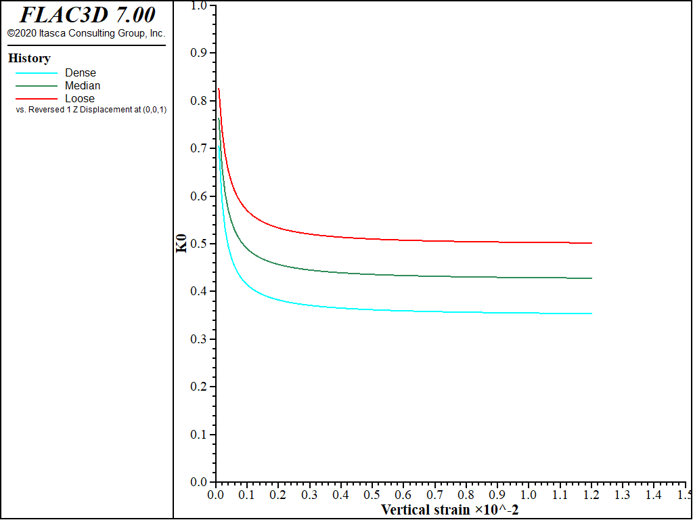
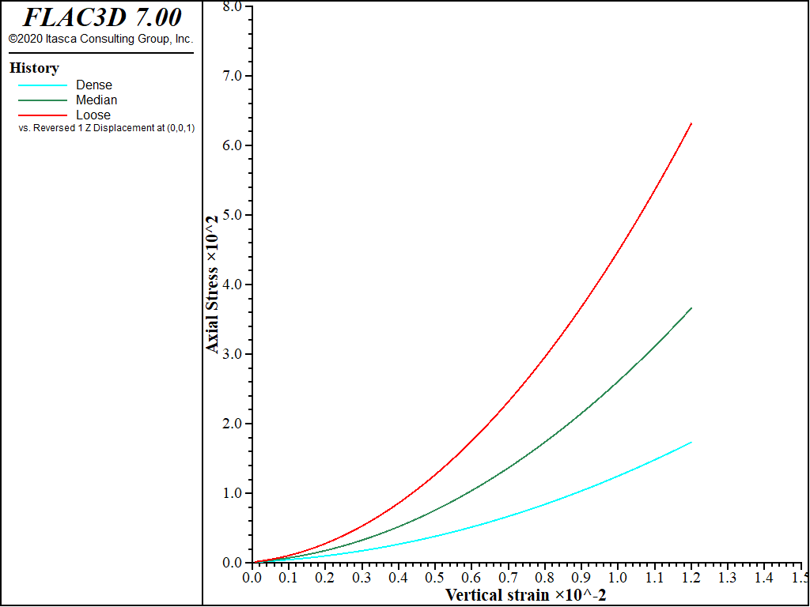
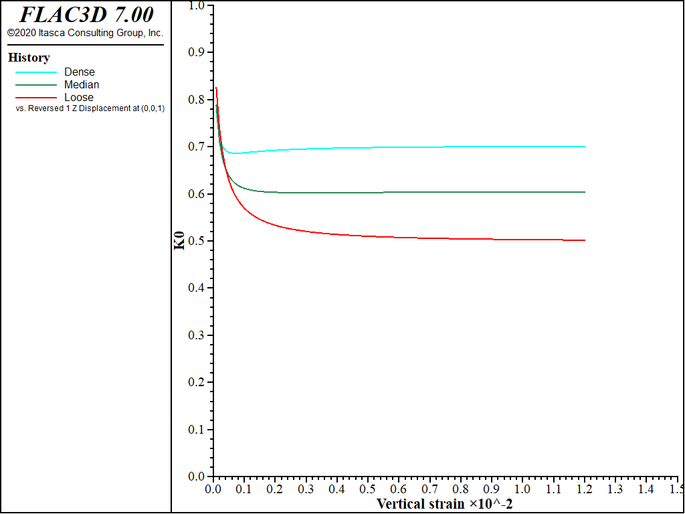
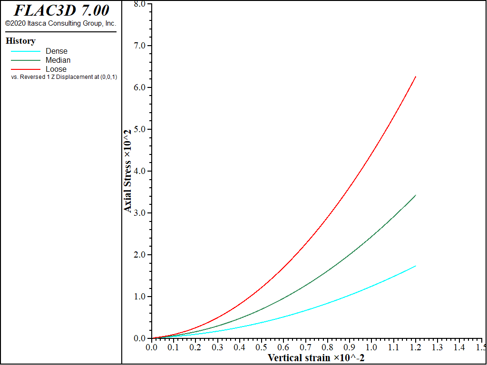

采用塑性硬化模型的固结仪试验
注意
要在 FLAC3D 中查看此项目，请使用菜单命令 。 选择“ConstitutiveModels/ OedometerPlasticHardening”并选择“OedometerPlasticHardening.f3dprj”以加载。 该项目的主数据文件见本示例末尾（main data file）。
本节介绍固结仪试验的模拟，以展示 塑性硬化（PH）模型（Plastic-Hardening (PH) model）再现 侧向应力比 \(K_0 = \sigma_h/\sigma_h\) 演变的能力。本例（工况 1）的模拟中使用了摩擦角分别为 30、35 和 40 度的三种砂，默认 固结系数按 \(K_{nc} = 1 − \sin \phi\) 计算。模型特性 列于 表 1（Table 1）。表中未列出的特性采用 默认值。初始时模型处于平衡状态，各网格单元为各向同性应力状态， \(\sigma_1\) = \(\sigma_2\) = \(\sigma_3\) = −1 kPa。
| 参数 | 密砂 | 中密砂 | 松砂 |
|---|---|---|---|
| \(E^{ref}_{50}\) (kPa) | 4.0e4 | 3.0e4 | 2.0e4 |
| \(\phi\) | 40 | 35 | 30 |
| \(\psi\) | 10 | 5 | 0 |
| \(K_{nc}\)（工况 2） | 0.7 | 0.6 | 0.5 |
| \(p_{ref}\) (kPa) | 100.0 | ||
| \(m\) | 0.5 | ||
| \(\sigma^{ini}_{1 \sim 3}\) (kPa) | -1.0 | ||
| \(OCR\) | 1.0 |
固结仪试验中压缩引起的应力比演变结果示于 图 1（Figure 1），可以看出它们正确再现了预期的演变 路径。图 2（Figure 2） 给出竖向固结仪压力与竖向应变的关系。 在指定参考压力 100 kPa 处的曲线斜率再现了预期的固结仪 刚度（由于 \(E^{ref}_{oed}\) 未作为输入给出，默认将其赋为与 \(E^{ref}_{50}\) 相同；参见 PH 模型的特性一节（property section of the PH model））。
工况 2 中重复该试验，分别使用预定义值 \(K_{nc}\) = 0.7、0.6 和 0.5。 \(K_0\) 的结果绘于 图 3（Figure 3）， 图 4（Figure 4） 给出竖向固结仪压力随轴向应变的变化。 同样，正确再现了参考竖向压力下的应力路径和固结仪刚度。


图 1：摩擦角为 30、35 和 40 度且采用默认 \(K_{nc}\) 值的固结仪试验计算得到的 \(K_0\) 路径。


图 2：摩擦角为 30、35 和 40 度且采用默认 \(K_{nc}\) 值的固结仪试验的竖向压力与竖向应变关系。


图 3：摩擦角为 30、35 和 40 度且采用指定 \(K_{nc}\) 值的固结仪试验计算得到的 \(K_0\) 路径。


图 4：摩擦角为 30、35 和 40 度且采用指定 \(K_{nc}\) 值的固结仪试验的竖向压力与竖向应变关系。
数据文件
OedometerPlasticHardening.dat
model large-strain off
zone create brick size 1 1 5
zone cmodel assign plastic-hardening
zone prop dens 1000 pressure-reference=100. exponent=0.5 ...
over-consolidation-ratio=1.0 factor-cut 0.01
zone prop stress-1-effective=-1 stress-2-effective=-1 stress-3-effective=-1
zone prop stiffness-50-reference=4e4 friction=40. dilation=10. ...
coefficient-normally-consolidation=[_Knc1] range id 1
zone prop stiffness-50-reference=3e4 friction=35. dilation= 5. ...
coefficient-normally-consolidation=[_Knc2] range id 3
zone prop stiffness-50-reference=2e4 friction=30. dilation= 0. ...
coefficient-normally-consolidation=[_Knc3] range id 5
zone cmodel assign null range id-list 2 4
;
zone gridpoint fix velocity
zone face apply velocity-z -1e-5 ...
range union position-z 1 position-z 3 position-z 5
zone initialize stress xx -1 yy -1 zz -1
;
[global _z15 = zone.near(0.5, 0.5, 4.5)]
[global _z13 = zone.near(0.5, 0.5, 2.5)]
[global _z11 = zone.near(0.5, 0.5, 0.5)]
fish def _k0_d
global _k0_l = 0.5*(z.s.xx(_z15)+z.s.yy(_z15)) / z.s.zz(_z15)
global _k0_m = 0.5*(z.s.xx(_z13)+z.s.yy(_z13)) / z.s.zz(_z13)
global _k0_d = 0.5*(z.s.xx(_z11)+z.s.yy(_z11)) / z.s.zz(_z11)
end
zone history displacement-z position 0 0 1
zone history stress-zz position 0.5 0.5 4.5
zone history stress-zz position 0.5 0.5 2.5
zone history stress-zz position 0.5 0.5 0.5
fish history _k0_d
fish history _k0_m
fish history _k0_l
history interval 10
;
model step 1200
model save [string.build('oed%1', _ICase)]
| 这些内容对您有帮助吗？… | FLAC3D © 2019, Itasca | 原文更新于 2020 年 10 月 8 日 |